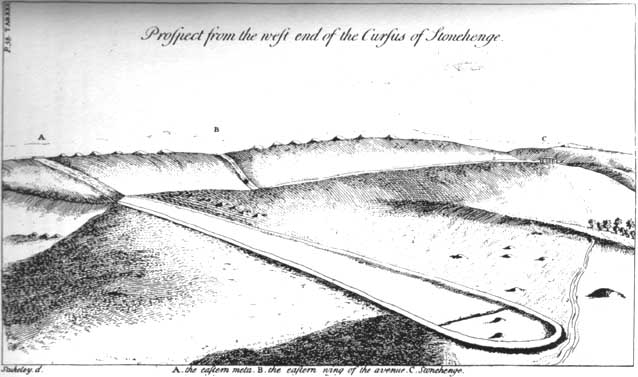

Irish Cursus Monuments
Astronomic Interelationships and Landscape
Irish Cursus Monuments
Browse through the categories above for articles relating to theory, concepts, methodology, tutorials aswell as specific studies relating to Irish sites and the Irish landscape.
Introduction
In this presentation I describe and chart the inherent astronomic interrelationships, which in neolithic times, In an Irish context, existed between locations and precincts which have an associated cursus monument.
The premise:
The ancient Irish afforded special significance to locations where they could observe, on divisional days within the solar and lunar cycles, the sun or moon rise from, or set into, what they regarded as sacred mountains.
What is a cursus ?
Cursus was a name given by early British archaeologists such as William Stukeley to the large parallel lengths of banks with external ditches which they mistakenly thought were early Roman or Celtic athletic courses or racetracks, after the Latin word cursus, meaning "course".
Stonehenge Cursus by the British antiquarian William Stukeley circa 1740
Cursuses are in fact monumental Neolithic (or in some cases - perhaps early bronze age) structures resembling ditches or trenches and are found exclusively in the islands of Great Britain and Ireland. In Britain, relics found within the structures indicate that they were built between 3400 and 3000 BC, making them amongst the oldest monumental structures on the these islands. Almost no archaeological investigation has taken place for Irish cursuses. In Ireland, cursus monuments are almost always to be found located in precincts with other Neolithic architecture such as standing stones, passage tombs or cairns.
The purpose of Cursuses remain unknown. It has been conjectured that they were used in rituals connected with ancestor veneration, that they follow astronomical alignments or that they served as buffer zones between ceremonial and occupation landscapes, as liminal spaces between the living and the dead. In Britain studies suggest an alternative interpretation and proposes that they were used for ceremonial competitions. Finds of arrowheads at the terminal ends suggest archery and hunting were important to the builders and that the length of the cursus may have reflected its use as a proving ground for young men involving a journey to adulthood.
Methodology
Getting a Neolithic view
The observations described in this presentation have been determined using a combination of GIS (Geographic Information System) derived values, computer generated landscapes and astronomy software.
This enables us to get a view of the surrounding landscape for the sites of interest and accurately locate other sites of interest on the visible horizon.
It allows us to recreate the state of the cosmos for the relevant time period, and most importantly in the context of this presentation, identify the positions on the horizon where the sun and moon could be observed to rise and set on divisional days within the solar and lunar cycles.
Locations Map
- The Hill of Uisneach.
- Keadeen Mountain.
- Slievenamon Mountain.
- Brewel Hill.
- Blackrock (Lugnagun Mountain).
- Woodtown.
- Newgrange.
- The Hill of Tara.
- Ballyoskill.
- Slievebawn Mountain.
- Coolasnaghta (Mount Leinster)
- Newtown
- Knockainy West Site 1
- Knockainy West Site 2
- Annagh
- Loughcrew
Locations
1. The Hill of Uisneach
The Hill of Uisneach is an ancient kingship and ceremonial site in County Westmeath. It consists of numerous monuments and earthworks, prehistoric and medieval, including a megalithic tomb, barrows, enclosures, standing stones, holy wells and an ancient road. In Irish mythology Uisneach is deemed to be the symbolic and sacred centre of the island. It was said to be the burial place of mythical figures such as the god Lugh, and a place of assembly associated with the druids and the festival of Bealtaine.
Strictly (archaeologically) speaking, The Hill of Uisneach does not have an associated cursus monument. It may seem rather odd to include this location, however, the feature described as an 'ancient road' is remarkably similar to the Hill of Tara linear earthwork known as 'Teach Midchuarta' - which archaeologically speaking IS regarded as the remains of a cursus. Both sites have features consistent with ceremony and kingship over thousands of years. This 'ancient road' consists of a sunken and double embanked feature running N-S for some 500m towards the top of the hill.
Abi Skipp / Uisneach Sign / CC BY-SA 2.0
The highest point of the Hill of Uisneach is occupied by a ruinous megalithic tomb. Though unclassified, it's prominent position in the landscape make it consistent with being an Irish Passage Tomb Tradition Site.
Uisneach Ancient Road
Locations
2. Keadeen Mountain
Positioned on the western slopes of Keadeen Mountain, this long rectangular enclosure (L c. 286m; Wth c. 34m) is defined by banks and is aligned in a generally E-W direction on a steep slope, with a cairn (WI027-044----) just outside the NE corner.
The banks (avg. Wth 5m; H 0.3-0.6m) which are probably constructed from the mountainside scree, are almost entirely covered in heather and sod, but in one place the stone fabric of the bank is fully exposed. The lower end of the monument terminates with a bank while the upper end appears to be open.
Keadeen Cairn is consistent with being an Irish Passage Tomb Tradition Site. Though never excavated this cairn what would be considered highly likely to contain a passage tomb.
Keadeen Cursus
Locations
3. Slievenamon Mountain
Slievenamon (Irish: Sliabh na mBan - "mountain of the women") is a mountain with a height of 721 metres in County Tipperary. The mountain is steeped in folklore and is associated with the mythical hero Fionn mac Cumhaill. On its summit are the remains of ancient burial cairns.
The cursus is located on the E slope of Slievenamon. Cairn TS078-001---- is located 150m WNW of the cursus. Aligned roughly E-W, the monument, running downslope, consists of two roughly parallel stone banks overgrown with grass, moss and heather with an entire length of c. 360m. The banks are 90m apart, though they narrow to 75m at the upper western end. The upper end terminates with a bank on a relatively gentle slope, however, the ground level becomes increasingly steeper and both banks appear to terminate at the E end where the ground level becomes very steep.
Kevin Higgins / Slievenamon Summit Cairn / CC BY-SA 2.0
The Slievenamon summit cairn is consistent with being an Irish Passage Tomb Tradition Site. No remains of a passage are evident, however the cairn features a chamber modified from a rocky outcrop.
Slievenamon Cursus
Locations
4. Brewel Hill
The Brewel Hill cursus is visible in aerial imagery as the cropmarks of two parallel fosses defining a long linear area. It is level at the SE end but rises gently towards the NW. A shallow linear hollow (D 0.3m; Wth 10m) while not particularly well-defined, is nonetheless traceable with an estimated length of circa 130m NW-SE, and terminates in a curved end at NW. From the NW, looking SE along its line, the cursus appears to be directed towards Keadeen Mountain.A very large mountainside cursus runs up the slope of Keadeen Mountain terminating just short of the summit cairn.
Brewel Hill Environs
At the summit of Brewel Hill there is a Ceremonial Enclosure or Henge type monument which contains the remnants of a stone circle known as the 'pipers stones'. Two of the boulders are granite, one is a red conglomerate ‘puddingstone’ and one is of white quartz which is known locally as the ‘Piper’s Chair’.
Brewel Hill Cursus
Locations
5. Lugnagun Mountain (Blackrock)
Lugnagun Cursus is located on the steep westernmost slope of Lugnagun ridge. A cairn (WI005-058---) is located on the summit of the ridge, at the eastern end of the monument.
Lugnagun Lidar
This cursus consists of two parallel earthen banks (Wth c. 4.5m; H c. 0.5m) which are 36-39m apart, aligned roughly E-W, and visible over a distance of over 600m. At the upper, eastern end the cursus has an open terminal, with the southern bank stopping some distance short of the cairn, though this bank appears to have been robbed out. The downslope portion of both banks has been largely levelled but is visible on aerial photographs and Lidar imaging. Heavily disturbed, the cairn consists of an oval cairn (dims. 10m E-W x 7.5m N-S; H 1m) slightly below and to the NW of the summit of Lugnagun. Two small slabs are set at right angles to each other slightly to the W of the cairn centre, are possibly the remains of a cist.
Lugnagun Cursus